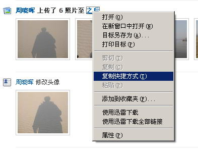
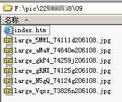

针对校内网开发的相册下载器 方便同学们批量下载 需要.net 2.0
特点：
1、在下载目录会生成网页形式的图片浏览页面 2、可在软件中直接查看图片缩略图 3、可快速批量下载，支持设置任务批量执行
更新内容
2009年5月12日更新内容：
- 修改下载机制，防止卡死出现。
2009年5月10日更新内容：
- 修复前一版本为了提高速度而出现的无法下载多个相册的问题；
- 大部分代码重构，提高了效率；
- 增加记住登录状态功能，由IE的Cookie负责记录。
2009年4月29日更新内容：
- 大幅度提高登录速度；
- 修正首页复制粘贴链接的错误；
- 下载过程改为异步传输，提高响应度。
华军下载(抱歉，网络服务更新太快，现在已经不能正常使用了，故不要下载了)
使用说明
最近有不少人来询问我这个软件的具体使用方法，可能有些方面的确做得不够直接。所以能主要对该软件的基本操作做个说明：
-
登录 这个不用我说了，.net的程序，源代码都很容易查看，害怕我盗号的同学自己看看源代码确认一下吧。另外，用户名不是由我的程序记住的，而是IE记住的，如果不想的话，就把IE的cookie关了。
-
下载相册 首先在校内网上把自己心仪的相册的地址复制下来，当然也可以复制用户名则可以查看该用户的所有相册，如下图： 
-
点击从剪贴板中获取 如果为相册则直接进入列表，若为用户，则放入左侧框中。（注：校内中还有不少地方均可直接复制粘贴） 若为用户，当左侧框出现用户ID号后，点击获取相册，即可将该用户所有相册放入下载列表。 注意：下载列表支持右键进行简单的去除功能。
-
查看缩略图 双击该列表中某一项，下方框中会出现该相册的所有相片，双击某项，即可查看该图缩略图。
-
批量下载 点击右上角的 批量下载，即可开始批量下载上方列表中的项目。开始之前需要选择保存目录。 各种状态如图所示：
-
点击获取好友列表 可以轻松的获取所有好友的列表，并可以点击获取相册获取该好友的所有相册。
-
文件目录结构 每个相册目录中都含有一个index.htm文件，可以像相册一样打开查看所有图片。 
最后，感谢各位查看，也感谢各位的支持，也欢迎提出改进意见和建议。